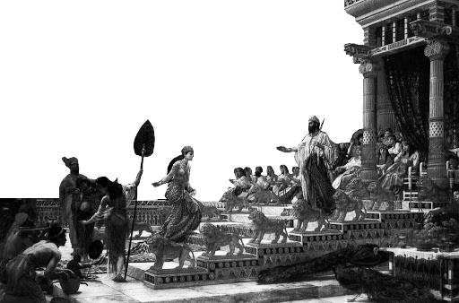
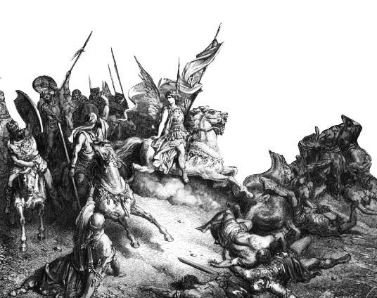

HISTORY OF
Levante
: 서아시아에서 동지중해를 가리키는 용어.
오늘날 이스라엘, 팔레스타인, 요르단, 레바논 등의 지역을 가리킨다.
B.C.
17th
6th
이스라엘 왕국의
성립과 분열
이스라엘-팔레스타인 분쟁 지역의 고대 지명은 가나안이다.
가나안은 기원전 13세기까지 주로 이집트의 통치를 받았다.
BC 2000년경 아브라함이 이끄는 히브리족이 땅에 정착하지만,
기근 때문에 이집트의 나일 강 하류로 이주하였다가
BC 1200년경 가나안으로 돌아왔다.
히브리족은 가나안족과 싸우며 땅을 넓혔고
결국 유프라테스 강 유역까지 다스리는 강대국이 되었지만,
솔로몬 왕이 죽은 뒤 이스라엘은 왕위 다툼이 생겼고
결국 북이스라엘, 남유다로 나뉘었다.
이후 북이스라엘은 기원전 722년 아시리아에,
남유다는 기원전 586년 바빌로니아에 의해 멸망한다.

B.C.
536
142
페르시아와
그리스 시대
알렉산더 대왕에게 정복 당하여 레반트는 200여년간 그리스의 지배를 받았다.
하스모니아의 마카베가 반란을 일으켜
42년 무렵 하스모니아 왕조가 유대인 자주권을 획득했으나
하스모니아 왕국 안에서 유대인들이 독립하였다.
이 시대에 베들레헴에서는 예수가 탄생하였고,
그를 메시아로 믿고 따르는 초기 기독교가 발생하였다.

B.C.
63
A.D.
1917
끝없는 변화
끝없는 찬탈의 역사
2000여년의 세월동안 땅은
다양한 국가의 지배를 받게 된다.
과정 속에서 이스라엘 민족보다 팔레스티나 민족의 비율이 높아지며
점차 레반트의 블레셋은 아랍의 영향력이 짙어진다.
로마의 지배 B.C. 63 - A.D. 313
비잔틴의 지배 A.D. 313 - A.D. 636
아랍의 지배 A.D. 636 - A.D. 1516
오스만 제국의 지배 A.D. 1517 - A.D. 1917
영국의 지배 A.D. 1918 - A.D. 1948